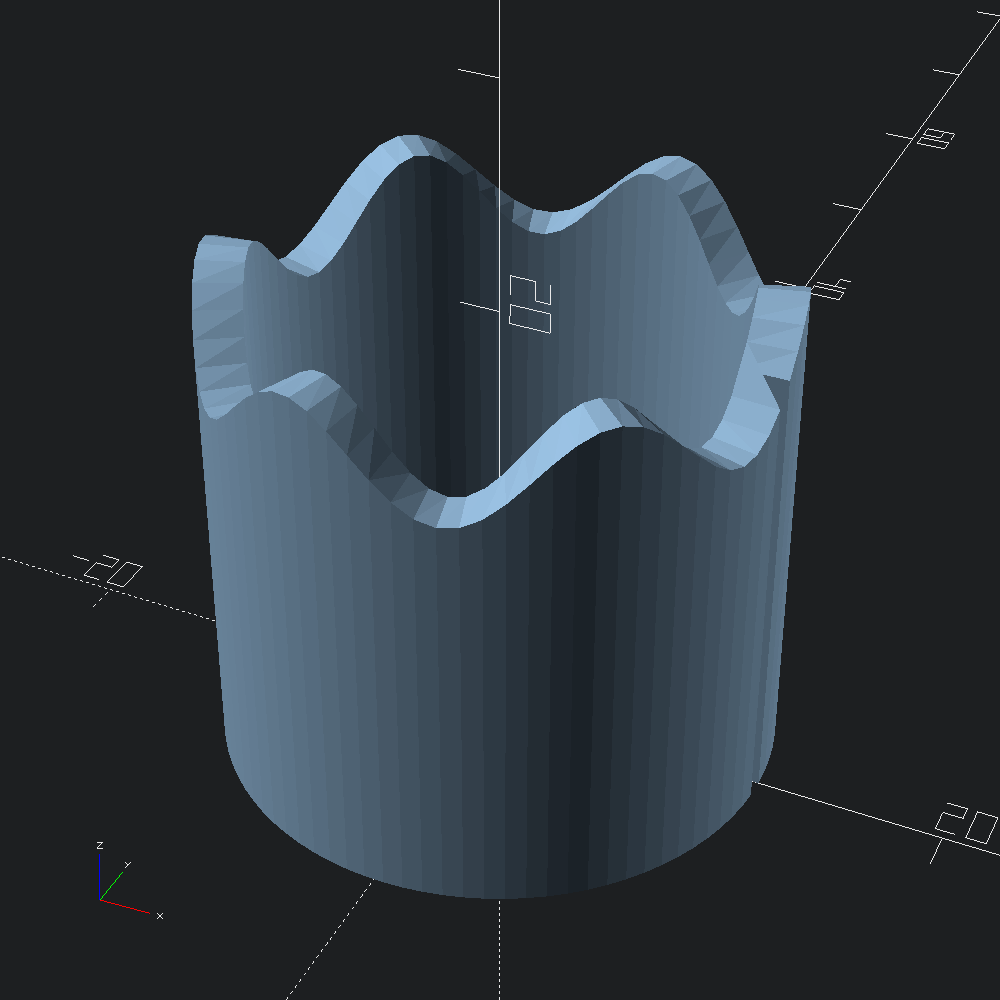

open Scad_ml
let poly =
let w = 2. in
Poly2.make [ v2 0. 0.; v2 w 0.; v2 w 1.; v2 0. 1. ]
let mesh =
let r = 10.
and h = 20.
and s = 2.
and step = 4.
and rad d = d *. Float.pi /. 180. in
let f i =
let t = Float.of_int i *. step in
MultMatrix.(
mul
(mul (rotation (v3 (rad 90.) 0. (rad t))) (translation (v3 r 0. 0.)))
(scaling (v3 1. (h +. (s *. Float.sin (rad (t *. 6.)))) 1.)))
in
Mesh.sweep ~transforms:(List.init ((360 / 4) + 1) f) polyConvert our mesh into an OpenSCAD polyhedron and output to file.
let () = Scad.to_file "wave_cylinder.scad" (Mesh.to_scad mesh)